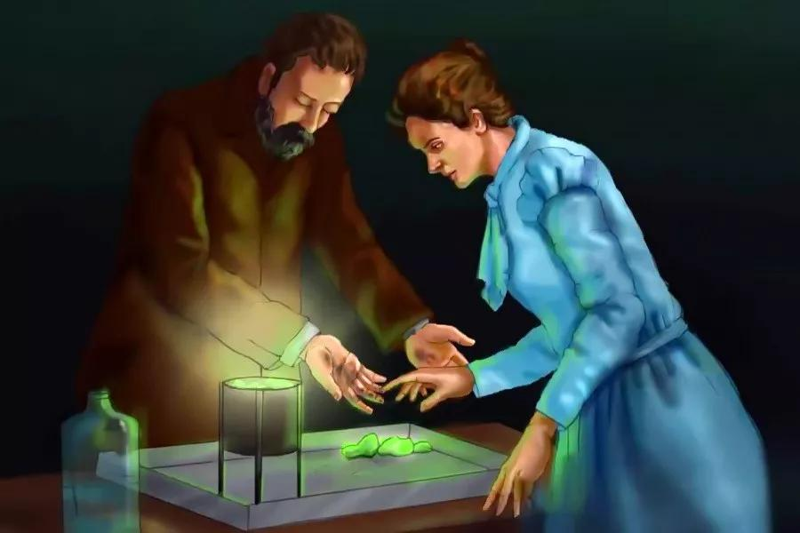
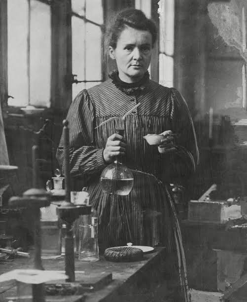
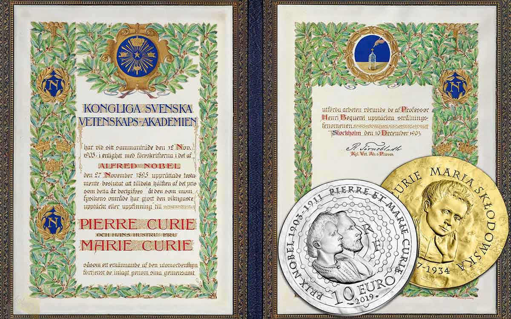
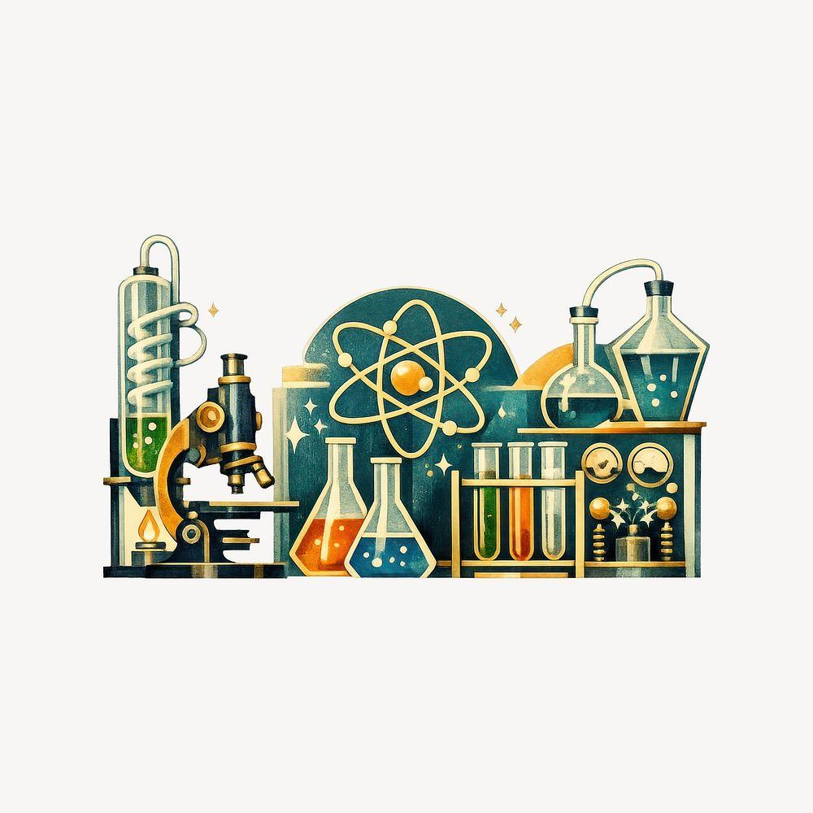

01Polonium & radium
Những phát hiện đã mở rộng hiểu biết của con người về vật chất và phóng xạ.
Khám phá chi tiết ↗NHỮNG CON NGƯỜI LÀM THAY ĐỔI THẾ GIỚI
Người phụ nữ mở lối cho khoa học hiện đại. Từ niềm đam mê khám phá đến những phát hiện làm thay đổi lịch sử khoa học, hành trình của bà là biểu tượng của trí tuệ, lòng kiên trì và khát vọng chinh phục tri thức.

KHOA HỌC
CHÂN DUNG NHÀ KHOA HỌC
Marie Curie, tên khai sinh Maria Skłodowska, là nhà vật lý và hóa học sinh tại Ba Lan, sau này làm việc tại Pháp. Bà dành phần lớn sự nghiệp để nghiên cứu hiện tượng phóng xạ — một lĩnh vực còn mới mẻ và đầy thách thức vào cuối thế kỷ XIX.
Cùng Pierre Curie, bà góp phần phát hiện polonium và radium. Bà nhận Nobel Vật lý năm 1903 và Nobel Hóa học năm 1911, trở thành biểu tượng của trí tò mò, sự bền bỉ và tinh thần cống hiến cho tri thức.
Khám phá cuộc đời ↗NHỮNG DẤU ẤN

01Những phát hiện đã mở rộng hiểu biết của con người về vật chất và phóng xạ.
Khám phá chi tiết ↗
02Sự ghi nhận cho những nghiên cứu có ảnh hưởng sâu rộng trong vật lý và hóa học.
Khám phá chi tiết ↗
03Các nỗ lực của bà góp phần thúc đẩy ứng dụng bức xạ trong y học.
Khám phá chi tiết ↗GÓC NHÌN CỦA NHÓM
Bởi đằng sau mỗi khám phá lớn là lòng kiên trì theo đuổi những câu hỏi chưa có lời giải.
Nhóm lựa chọn Marie Curie vì câu chuyện của bà cho thấy tri thức không chỉ đến từ tài năng mà còn từ sự chăm chỉ, tư duy độc lập và tinh thần hợp tác. Trong bối cảnh phụ nữ phải đối mặt với nhiều rào cản học thuật, bà vẫn theo đuổi nghiên cứu và để lại đóng góp lâu dài. Hành trình ấy truyền cảm hứng để chúng em chủ động học hỏi, không ngại khó khăn và dùng hiểu biết để tạo ra giá trị tích cực.
MỘT THÔNG ĐIỆP VƯỢT THỜI GIAN
MARIE CURIE · TINH THẦN KHÁM PHÁ
Tri thức bắt đầu từ sự tò mò, trưởng thành nhờ lòng kiên trì và tạo nên giá trị bằng tinh thần khám phá.
Tìm hiểu di sản ↗TIẾP TỤC HÀNH TRÌNH